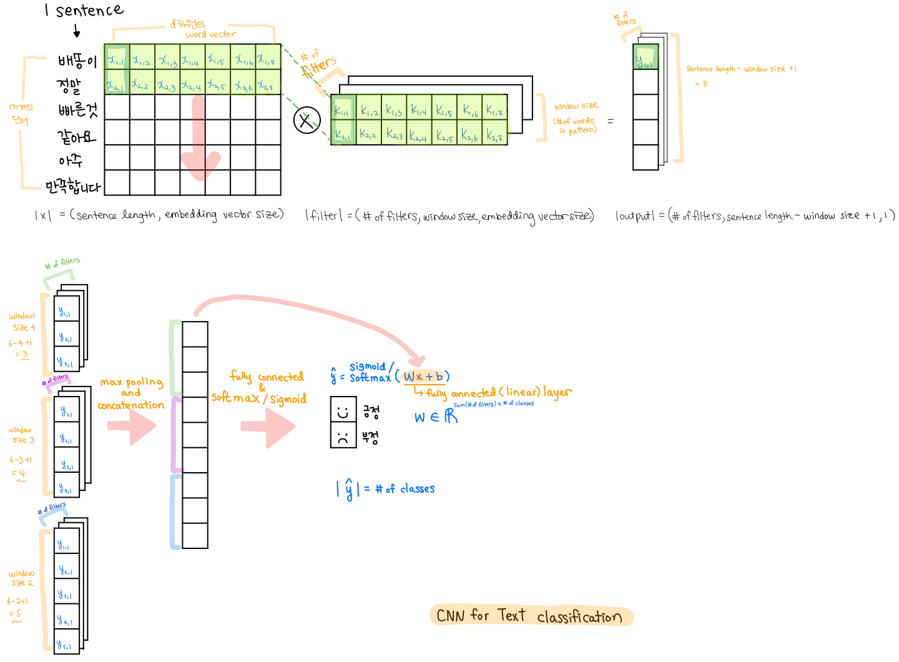

Text Classification using Convolutional Neural Network
Implementing a CNN for Text Classification in Pytorch
이번 blog post에서는 Pytorch로 Text Classification Task를 Convolution Neural Network (CNN)으로 구현해 봅니다. 데이터는 2019년 초에 competition이 끝난 Kaggle의 Quora Insincere Questions Classification를 사용해 보았습니다. 구현하기 전, convolution filter와 영상/이미지에서 쓰이던 CNN이 text classification에서는 어떻게 사용이 되는지 설명합니다.
1. Convolution Neural Network (CNN) Key Points
1-1. Convolution Filter (Kernel)
딥러닝이 없던 시절부터 영상/이미지 관련 업무에서 Convolution Filter (Kernel))는 존재 했습니다. 영상/이미지 처리를 하는데에 있어서 대표적으로 object detection 이나 image classification task가 있습니다. 이러한 일들을 하고자 할 때 영상/이미지에 있는 물체의 형태를 추출해야 했습니다. 물체의 형태를 추출할 때 가장 중요한 것은 edge를 추출해 내는 것입니다. 그리하여 딥러닝 전에는 사람이 직접 edge detection을 할 수 있는 convolution filter를 만들었습니다. 각 주어진 목표에 맞는 filter를 만들어서 그림과 filter를 연산을 하면 edge가 나오게 되고, 이 edge를 가지고 주어진 task에 사용을 했습니다. 이러한 전처리 과정, 주어진 task에 맞는 filter를 만드는 과정, 을 거쳐야 비로소 주어진 task를 할 수 있었습니다. CNN은 어떻게 다를까요?
1-2. How CNN has made our lives easier?
CNN도 하는 것은 같습니다. 즉, convolution filter를 사용한다는 점에서 같습니다. 다른점은 CNN은 사람이 직접 전처리 과정을 거쳐서 filter를 얻어내는 것이 아닌 저절로 이 convolution filter를 배웁니다. 출력을 만들어 내기 위해 CNN은 gradient descent, 즉 최적화를 통해 주어진 목표에 맞는 filter의 구성을 배웁니다. 예를 들어 자동차를 구별해 내는 image classification 문제가 있습니다. 이 문제를 해결 하기 위해 필요한 필터를 CNN이 자동적으로 찾아 줍니다. 자동차를 검출하는데 훈련이 된 필터를 새로 입력받은 자동차 이미지에 사용하면 자동차가 검출되는 방향으로 작동하고, 우리가 원하는 “이 그림은 자동차 입니다”라는 답이 나오게 됩니다. 즉, CNN이 자동적으로 패턴을 인식/검출하기 위한 filter를 훈련을 통하여 구성해 줍니다.
또한 fully connected layer와 달리, convolution layer는 위치 정보를 고려합니다. 이미지에서는 각 픽셀이 인접해 있는 픽셀들과 인과관계를 가지고 연결되어 있기 때문에 위치 정보를 고려해야 합니다. 하지만 fully connected layer는 모든 경우의 수를 다 곱하기 때문에 위치나 노드 간의 순서를 고려하지 않습니다. 즉, fully connected layer에서 이미지 맨 왼쪽 픽셀이 맨 오른쪽 픽셀을 고려하는 것과 다르게 convolution layer는 근처의 픽셀들만 고려하게 되고, 그렇기에 배워야 하는 파라미터의 수가 줄어듭니다. 그런 방면 단점은 입력 사이즈와 출력 사이즈 계산이 복잡합니다. layer를 깊게 쌓으려고 할 때, kernel size, padding size, stride size를 맞춰주지 않으면 에러가 나기에 잘 계산을 해야 합니다.
1-3 Max Pooling
Down sampling 기법 중 하나 입니다. 이름에서 알 수 있듯이 filter를 거친 출력 값에서 가장 큰 값을 가져옵니다. 그 자리의 값이 높다는 것은 그 위치의 pattern과 잘 맞았다는 것이기 떄문입니다. 이렇게 큰 값을 가져오기 때문에 max pooling을 하면 위치 정보를 잃어버리지만 패턴 인식에는 가장 좋은 방법입니다. 아래 1-4에서 그림으로 부가 설명을 하겠습니다.
1-4. CNN for Text Classification?
이런 CNN이 text classification에는 어떻게 쓰일 수 있을까요? 2014년 Yoon Kim 교수님께서 Convolutional Neural Networks for Sentence Classification라는 논문으로 처음 알려진 CNN for text classification입니다. 이미지에서 CNN이 패턴을 인식/검출하기 위한 filter를 구성하듯, text classification에서는 각 문장의 label에 맞는 패턴을 찾아내는 필터를 만듭니다. 다시 말해 CNN은 문장이 어떤 단어, 구 또는 절이 나타는지에 대한 패턴에 따라 그 문장의 label에 맞는 convolution filter를 배웁니다. 예를 들어, “배송이 정말 빠른 것 같아요. 아주 만족합니다.” 라는 문장이 있고, 이 문장의 label이 긍정일 때, CNN은 문장을 훑으면서 패턴을 찾아냅니다. ‘“만족합니다”가 들어가면 긍정이구나!’ 라는 것을 CNN이 배우고, “만족합니다”를 찾는 filter를 구성하게 됩니다.

위의 그림에서는 각 단어가 embedding layer를 통과한 후의 문장을 시작으로 합니다. 찾고자 하는 패턴의 단어 갯수 만큼 convolution filter의 window size를 CNN 모델을 만들 때 결정 합니다 (위 그림에서는 2단어, 3단어, 4단어의 패턴을 찾습니다). convolution filter는 문장을 훑게 되는데, 2단어의 패턴을 찾는 filter라면 두 단어 씩 element wise multiplication을 하게 됩니다. 이 filter의 사이즈는 |number of filters, window size, embedding vector size|가 되며, 필터의 갯수 (number of filters)또한 embedding vector size와 window size와 같이 hyper parameter입니다. 그렇게 해서 2단어, 3단어, 4단어의 패턴을 찾는 convolution filter를 통과한 output들은 max pooling을 통해 각 필터 갯수별로 가장 큰 값이 하나씩 나오게 됩니다. 이 말은, “주어진 문장이 주어진 패턴에 대해 몇점정도 하는가?”이므로 패턴에 대한 각 문장의 점수라고 할 수 있습니다. 그 후, fully connected layer (linear layer)를 통과 시키고, softmax (binary인 경우 sigmoid)를 씌운 출력값 ($\hat{y}$) 은 각 클래스 별 확률 값을 줍니다.
2. Implementing a CNN with Quora data
필요한 library를 import합니다. torchtext는 NLP task를 좀 더 쉽게 할 수 있게 해주므로, data preparation에는 torchtext를 쓰는 것이 아주 편합니다. tokenizing은 spacy library를 통해서 합니다.
1 2 3 4 5 6 7 8
import numpy as np import time import spacy # for tokenizing import torch import torch.nn as nn import torch.nn.functional as F from torchtext import data, datasets from torchtext.data import Field
2-1 Data Preparation
데이터를 준비하는 과정입니다. 첫번째로 torchtext.data의 Field로 Text와 Label을 어떤 datatype으로 할 것인지를 지정해 줍니다. Text의 경우, 여기서 sequential 한 데이터인지 (문장이므로 True), batch_first는 batch dimension을 처음으로 둘 것인지 입니다. 예를 들어, 문장이 들어갈 때 |문장| = (batch_size, length)과 같이, batch size가 처음에 나오도록 해 줍니다. 이렇게 하는 것이 intuitive하고 다루기 쉬우므로 True로 지정합니다. tokenize는 tokenizer를 지정해 줄 수 있는데 저의 경우, spacy를 통해서 tokenizing을 합니다. include_lengths는 각 문장의 length를 같이 주는 항목이라 optional입니다. 저는 문장 길이 확인 차원에서 True로 지정해 주었습니다. 이 밖에도 다양한 parameter들을 지정할 수 있으니, 직접 하나하나 보면서 task에 맞는 parameter들을 지정하면 됩니다.
1 2 3 4 5 6 7 8
TEXT = Field(sequential=True, batch_first=True, tokenize="spacy", use_vocab=True, include_lengths=True)
# label의 datatype을 integer라도 꼭 float으로 지정을 해 주어야 에러가 나지 않습니다 LABEL = data.LabelField(dtype=torch.float)
datafields를 지정합니다. 제가 가지고 있는 quora는 tabular data로 qid, question_text, target이렇게 3개의 column이 존재하는데 qid는 질문의 id값이므로 모델에 넣을 필요가 없으므로 None이라고 지정했습니다. question_text는 위 Field에서 지정한 TEXT이고 target 또한 위에서 지정한 Label이기 떄문에 datafield를 아래와 같이 지정해 주고, train set과 validation set을 만들어 줍니다. 저의 train set과 validation set은 data directory안에 있으므로 path를 지정해 줍니다.
# check index of the word 'Korea' (stoi: string to index) print(TEXT.vocab.stoi['Korea'])
576
1 2
# check the index 908's word (itos: index to string) print(TEXT.vocab.itos[908])
practice
1 2
# vocabulary size len(TEXT.vocab)
261329
index가 주어지면 word를 볼 수 있도록, decoding dictionary를 만듭니다.
1
dict_decode = {idx: keyword for keyword, idx in TEXT.vocab.stoi.items()}
이제 위에서 준비된 데이터로 Iterator를 만들어 줍니다. Iterator를 통해서 batch size 로 데이터를 쪼개어 batch단위로 학습할 수 있게 해 줍니다. device를 설정하여 gpu에서 훈련시킬 것인지, cpu에서 훈련시킬 것인지를 지정할 수 있습니다. batch size는 64로 지정을 해 주었고, batch 안에서 길이 별로 학습을 할 수 있도록 sort_key parameter를 통해 길이별로 sorting을 했습니다. 이렇게 길이별로 sorting을 해야 비슷한 길이를 가진 문장 끼리 학습이 되기 때문에 학습 속도가 훨씬 빠릅니다.
CNNTextClassifier class를 만들어 줍니다. 이 Classifier는 nn.Module을 상속 받습니다.
constructor에는 input_size (vocabulary size가 들어갑니다), word embedding vector 사이즈인 word_vec_dim (word vector dimension), pad_index (각 문장에 대해 padding을 넣어 줍니다), n_classes (label에 몇개의 class가 있는지), n_filters (필터의 갯수), window_sizes (찾고자 하는 패턴의 갯수를 list형태로 넣어 줍니다).
위 그림을 통해 설명한 대로, forward 함수가 구성되어 있습니다. 특별히 언급할 점은, embedding layer와 convolution layer들을 통과한 후, batch normalization을 해 주었습니다. 김기현 강사님의 수업을 들으면서 batch normalization은 hyper parameter가 필요 없고, 수렴이 빠르며, 성능 향상이 좋아진다라는 말씀을 하셨기 때문입니다. Batch normalization은 training할 때, mini batch내의 평균과 분산을 구하여 output을 standardization을 통해 unit gaussian으로 만들어 줍니다. 염두해 두어야 할 점은, training과 testing에서 다르게 동작한다는 점입니다. testing에서는 훈련하여 얻은 전체 training set의 평균을 가지고 동작을 하게 됩니다. Batch normalization을 한 후, non-linearity function (ReLU) 을 통과시켜 줍니다. Batch normalization이 왜 잘 작동하는 지는 아직 연구 중에 있다고 합니다.
이제 training을 시켜봅니다. epoch의 갯수는 15로 지정했습니다. 가장 성능이 잘 나왔을 때의 parameter들을 torch.save(model.state_dict(), '저장-하고자-하는-이름.pt')를 통해 저장해 놓습니다. 나중에 불러올 때나, 이 모델을 가지고 더 training을 시킬 때 필요합니다.
다양한 hyper parameter들을 설정해야 하기 때문에, 성능을 최대한 끌어올리기 위해서는 다양한 hyper parameter를 지정하며 성능을 확인해 보아야 합니다.
Pytorch를 통하여 CNN model for text classification를 구현해 보았습니다. Reference는 아래와 같습니다. Ben Trevett의 pytorch-sentiment-analysis는 다양한 모델을 쉽게 pytorch를 통해 구현해 놓았으므로 같이 공부하기 쉬운 repository입니다. 또한 part 1의 CNN 기본 개념/설명은 김기현 강사님 강의 자료를 통하여 정리했습니다.
Reference:
Ben Trevett’s pytorch-sentiment-analysis repository